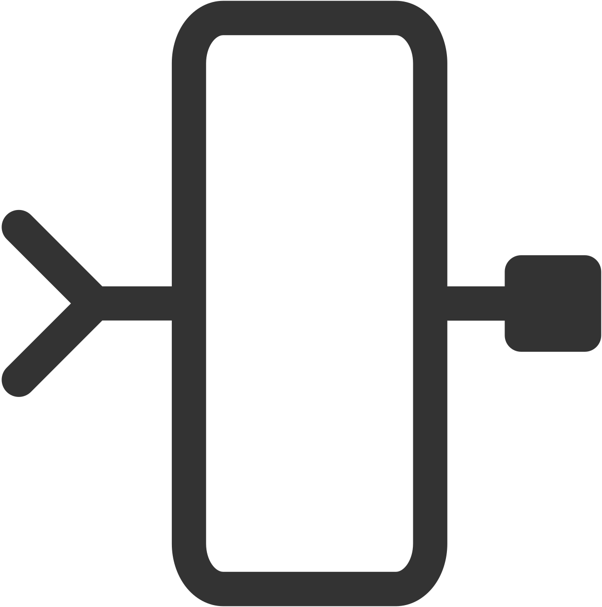
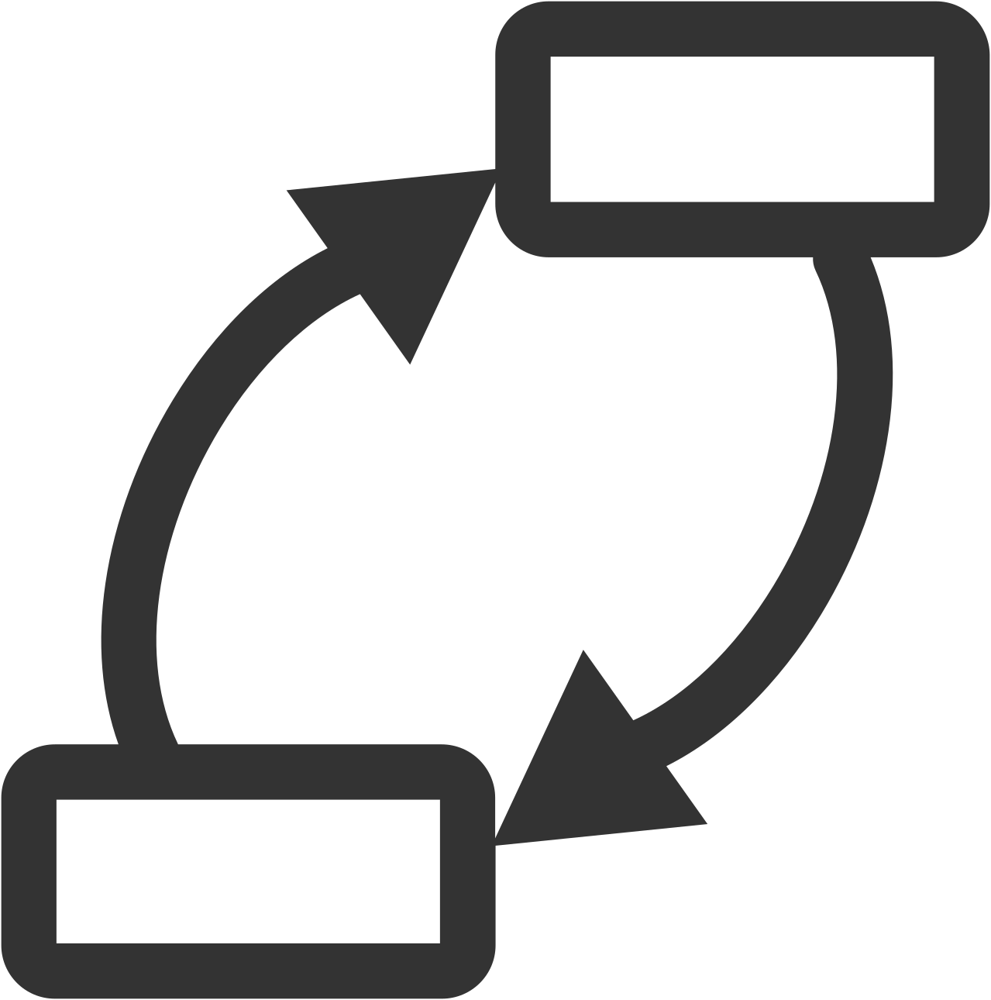
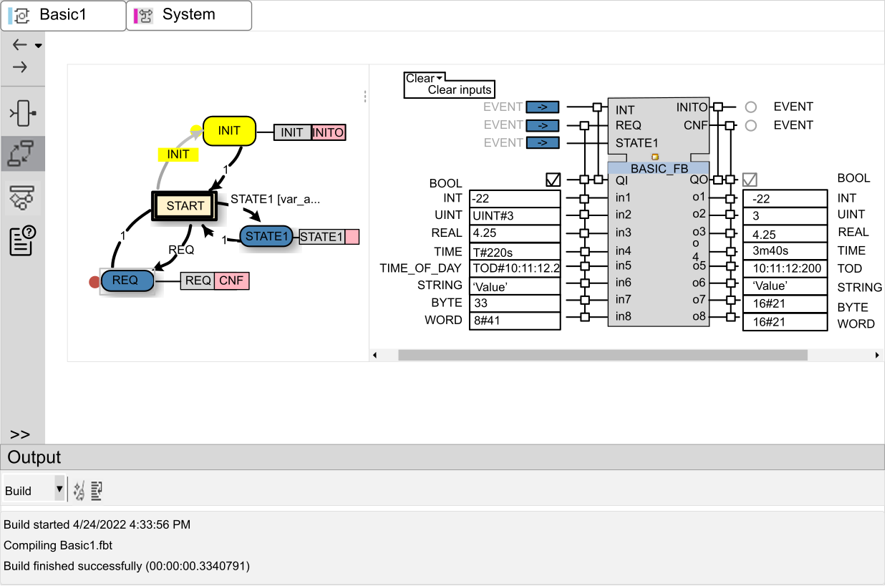
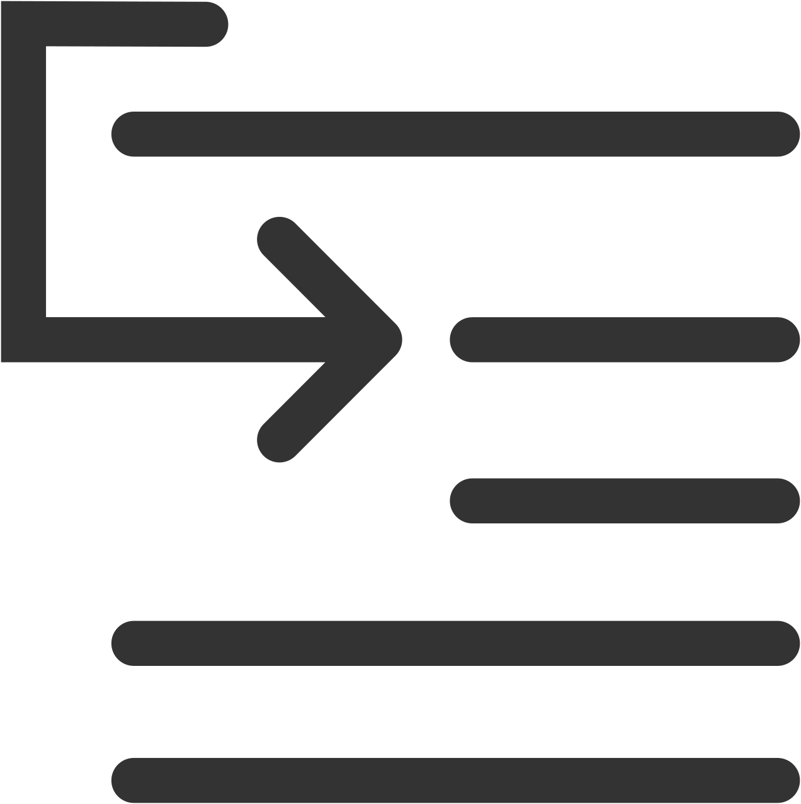
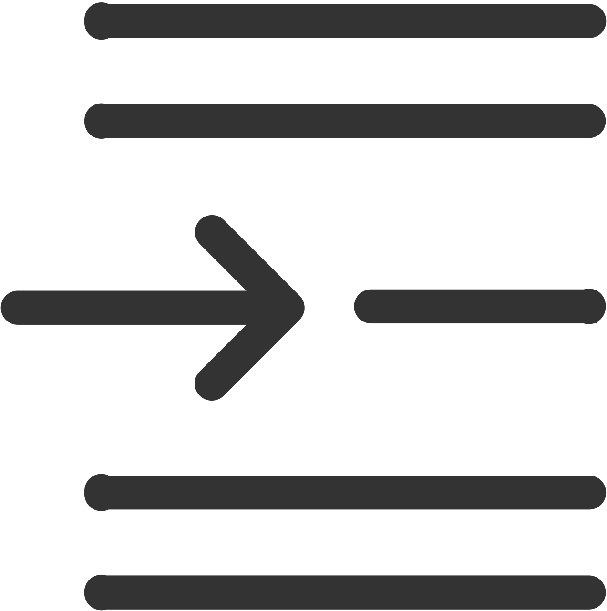
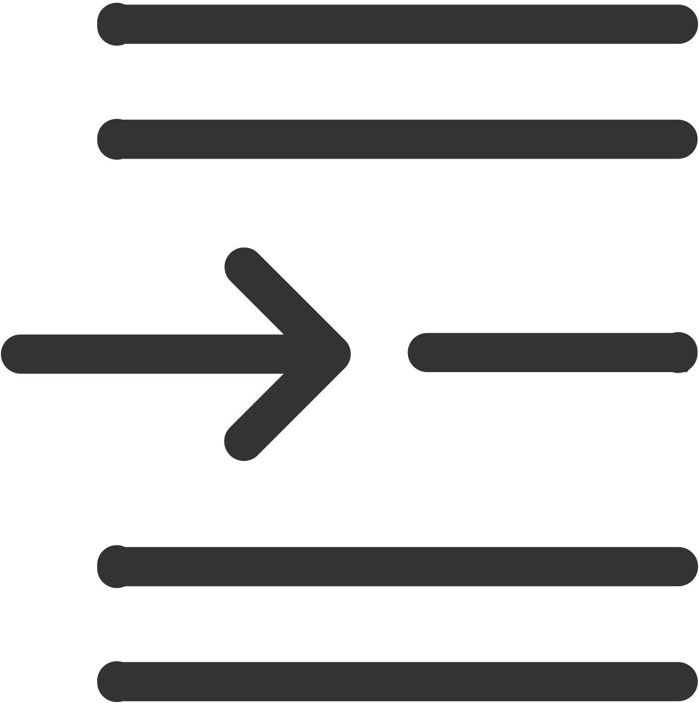
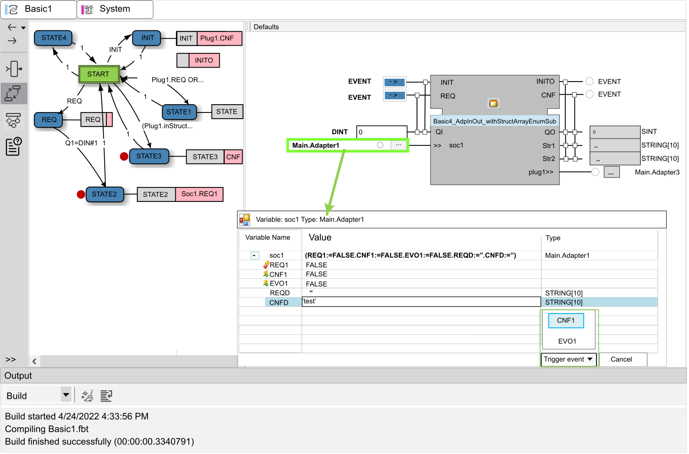
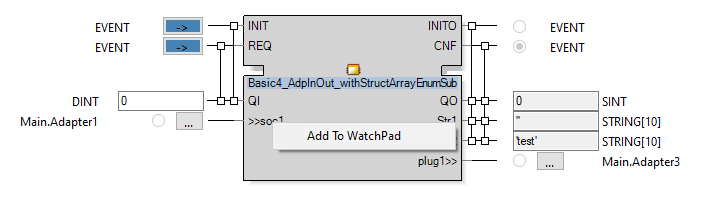

Test Container for Basic Function Blocks
You can test Basic function blocks for a correct workflow with a separate test container. In this way, you can simulate the functionality of a Basic function block by itself. The test container commands can be accessed from the Debug menu.
This ribbon is only available while the Basic Function Block editor is currently open and selected. You can also use breakpoints with this test function (refer to the Test Container Interface description).
This topic discusses:
Running the Test Container
To start the test container:
|
Step |
Description |
|---|---|
|
1 |
Click the Run button in the Debug menu. The Debug menu appears automatically when a function block editor is open and selected. |
|
2 |
The drop-down list box on the right of the Debug menu selects one of the available compiler targets to run the test of the function block. This specifies which compiler target is used to run the test. This may be particularly interesting when functions are used, which are not yet supported by an older compiler. In further consequence, when creating an installation package of the library, it is also possible to select which compiler target(s) will be used to compile this library (see Library Properties). |
|
3. |
When a project is running, that is, when the project is running on runtime and EcoStruxure Automation Expert - Buildtime is logged in to the device, the Debug tools can be selected from the ribbon. As a result, the selected block is loaded in the test container, whereby at the same time also the current values from the runtime are transferred to the test container. In this way, the behavior of the block can be checked with the current values of the runtime. |
The above-mentioned process starts the test container with the Execution Control Chart editor opened.
Test Container Toolbar
Use the vertical toolbar to quickly navigate between editor views:
|
Icon |
Description |
|
 Interface |
Displays the Interface editor for the Basic function block. |
|
 Execution Control Chart |
Displays the Execution Control Chart (ECC) in the Basic Function Block editor. |
|
Algorithms |
Displays the Algorithms editor. |
|
Documentation |
Displays the Documentation editor. |

Test Container Interface
The right pane shows the Execution Control Chart (ECC) for the Basic function block. Start an event by clicking on the respective blue rectangle on the input side, and the values for the variable can be set. When moving the mouse cursor over one of the blue event buttons the variables, which are linked with this event, are shown highlighted. That means the text beside the variable, identifying the type of the variable, turns to bold. The same is true for the output side, when moving the mouse cursor over the circular signal button of the events. The circular signal buttons of the output events indicate when the corresponding output event has been fired.

-
Click Clear to clear the values of all variables in unison.
-
In order to obtain a better process monitoring you can set breakpoints, by a right-click on one state symbol and then select Breakpoint from the context menu.
-
Breakpoints can also be set in the Algorithms editor. For this, select the Algorithms editor
 from the vertical toolbar on the left and click in the grey column on the left side next to the line numeration (see screenshot below). Click on the breakpoint again to remove it.
from the vertical toolbar on the left and click in the grey column on the left side next to the line numeration (see screenshot below). Click on the breakpoint again to remove it.
-
The test procedure can be controlled using the symbols now available in the symbol navigation bar, or the Debug menu buttons.
-
To close the test container, click the Stop button .
-
If the process has been halted with the Break button or a breakpoint which has been set, it can be restarted by clicking Run button (Start test container). In this case there are additional options available to choose the next step: Step over

, Step into
, or Step out
.
-
When moving the mouse over a variable within the algorithm, the current value of the variable is shown via a tooltip.
When using data type DT, consider the time zone of the test computer. The input value is processed as local time in the test container. See the comment on page IEC 61131 Data Types for restrictions in the border area of the permissible range of values for DT.

Setting Watchpoints
You can set watch points in the Watch pad in test mode, using the test container to watch the current values of certain variables in the test process. To do this, call the specified block in Watch pad by selecting << Add Watch >> and typing in the name of the block. After typing the first characters, a list of the possible building blocks is automatically displayed. You can select individual watch points from the list, or simultaneously open all available variables of the selected block by clicking on the block name.
Another way to add watch points to a Basic Function Block currently opened in the test container is to right-click a port (Event, Variable, Adapter) and select the context menu item Add To WatchPad to add a variable to the Watch Pad:

Guidelines for Input Variable Syntax
-
INT and REAL variables can optionally be entered simply as a number or as a typed literal (e.g. 22.4 or REAL#22.4).
-
TIME, TOD, DATE, DT can only be entered as a typed literal (e.g. T#22s or TOD#5:05:12.2, etc.).
-
BYTE, WORD, DWORD, LWORD can be entered in hexadecimal, octal, or integer decimal notation (e.g. 16#21, 8#41, 33), while the outputs use the hexadecimal notation.
-
STRING can be entered in one of two ways: either within single quotes or in form of a completely typed literal (e.g. 'VALUE' or STRING#'VALUE').
-
It is not possible to convert between different data types. So, if for example, a TIME constant is inserted on a DINT variable, or vice versa, then you cannot expect conversion. Incorrect typed input values are ignored.
-
For arrays and also for data type Struct, for blocks according to IEC61131, a button is displayed in the test container at the input of the corresponding variable type. Clicking on the button opens a dialog that allows you to define the individual values.
For general information, refer to the description of the Basic function block .
Detecting Endless Algorithm Execution Loops
The test container includes an infinite loop detection feature for Basic function blocks.
To use this feature:
|
Step |
Action |
|---|---|
|
1 |
Start test container for the desired function block by switching to the Debug tab and click Run. |
|
2 |
During testing, if an infinite loop is detected in the basic algorithm execution, the application displays the Infinite loop detected dialog identifying the algorithm and line of code where the loop is detected.
NOTE: The test container runs for 5,000,000 iterations before providing notice of the loop’s existence. If the loop is detected in a sub-block, instead of the block where the test container was started, the focus will switch to this sub-block
|
|
3 |
To stop debugging select Yes; to continue for another 5,000,000 iterations select No. |